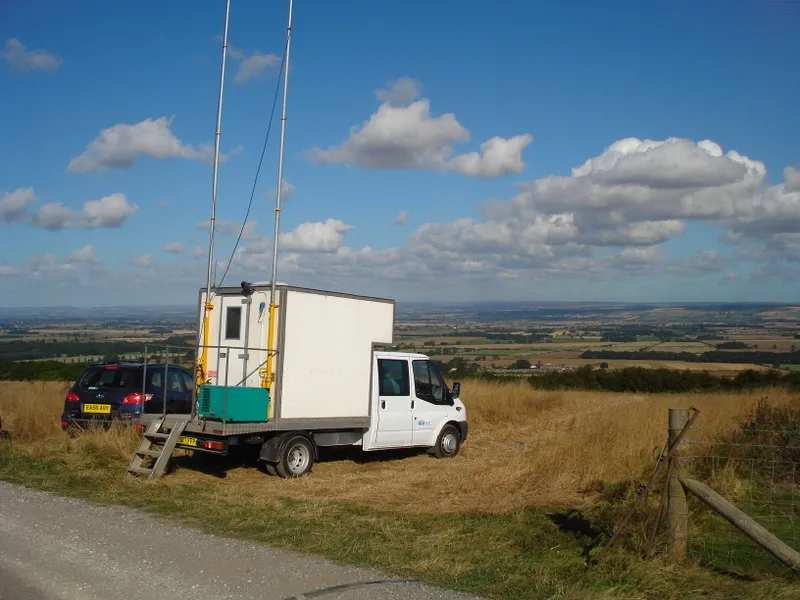
01
Survey evaluation & design
Geometry, fold, offset and azimuth modelled against the objective and the terrain, before a single flag is planted.
See the methodMuscat, Oman · Established 2011 · ISO 9001:2015
Africa Geophysical Services designs, acquires and processes land seismic surveys across desert, dense forest, mountain, populated ground and shallow water — from Muscat to the Great Lakes.
Who we are
AGS is a land seismic data acquisition and processing company headquartered in Muscat and working across East Africa, North Africa, the Gulf and beyond. We own our vibrators, our recording channels, our drilling rigs and our processing systems — and we recruit and develop local crews in every country we operate.
What we do
Survey design, field acquisition, in-field quality control and office processing — run by one accountable company, so nothing is lost in the handover between contractors.

Geometry, fold, offset and azimuth modelled against the objective and the terrain, before a single flag is planted.
See the method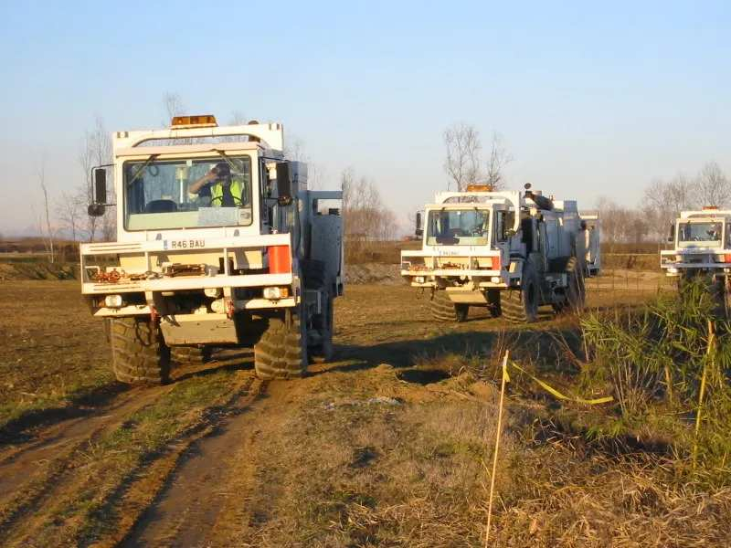
2D, 3D, 3D-3C, 4D and 4D-3C on Sercel 428, ARIES and nodal spreads, energised by a wholly owned vibroseis fleet.
See the capability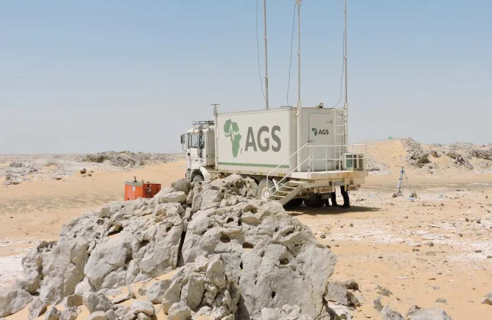
Field processing travels with the crew; ProMAX office processing carries the data through statics, velocity and migration.
See the sequenceHow a survey is built
Receiver line interval, source line interval and bin size are set by the target depth and the resolution the objective needs.
RTK GPS positions every source and receiver station to centimetric accuracy, and records the terrain as it is, not as the map says.
Cabled, distributed or cable-free nodal spreads, chosen by access, permitting and safety rather than by what is in the yard.
Vibroseis sweeps or shot holes. Every source point illuminates the subsurface and is recorded across the live spread.
Midpoints accumulate into bins. Fold is the number of traces that stack into each bin — and the reason a reflector survives noise.
Global reach
Headquartered in the Sultanate of Oman, with operational bases and registered offices through East Africa, North Africa, the Gulf, Kurdistan, Türkiye and the United Kingdom — and the logistics to move crews and equipment between them.
Registered office · operational base · logistics
Registered office · logistical support
Registered office · logistical support
Logistics · IMC GSL, Sheffield
Start a conversation
Send the basin, the target depth and the access constraints. A survey designer will come back with a geometry, a terrain plan and an honest view of what the ground will and will not give you.
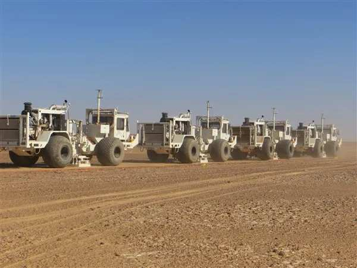
Home / About
Established in January 2011 and wholly Omani-owned, AGS has invested steadily in seismic vibrators, recording channels, GPS survey units, drilling rigs and ProMAX processing systems — building a contractor that answers to its own maintenance programme rather than a rental queue.
Our position
AGS provides comprehensive seismic services — designing and acquiring seismic surveys through to processing and interpreting the result. The company's stated aim is to become a service leader in land seismic data acquisition by using the most up-to-date technology, and to earn customer satisfaction through honest, integrity-based business practice.
Stacked layers — what a survey is trying to resolve
What we believe
These are not posters in the camp office. They are the reasons a job gets stopped, a route gets changed or a village gets consulted before a vibrator arrives.
A survey is not delivered when the last shot is fired. It is delivered when the data answers the question the client asked.
ISO 9001:2015 certified quality management, with in-field QC that catches problems while the spread is still on the ground.
AGS prioritises recruiting and developing local people in every country it works, rather than flying in a complete crew.
Exploration happens on land that belongs to someone. Engagement with the communities hosting the work comes before the work.
Transparency, business ethics and anti-corruption policy — stated, documented and applied to every tender and every camp.
Vibrators, channels, rigs, survey units and processing systems are owned outright, so schedules and standards stay ours to keep.
Leadership
A leadership team whose experience in land seismic runs back more than three decades, supported by national crews in each operating country.
Group
Our sister company, based in Killamarsh, Sheffield, extends the group's reach into the United Kingdom and provides logistical support for European and North African mobilisations.
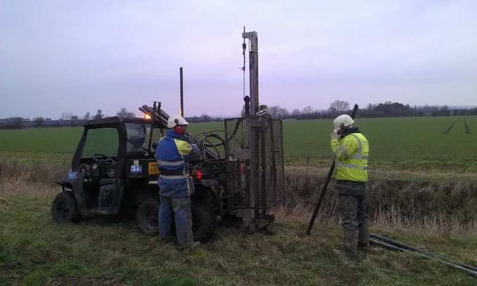
Home / Services
Comprehensive seismic services from designing and acquiring seismic surveys through to processing and interpreting the result.
Bin size, fold, offset range and azimuth distribution are modelled against the target depth and the terrain the spread has to cross. The output is a geometry, a terrain plan and a realistic production rate.
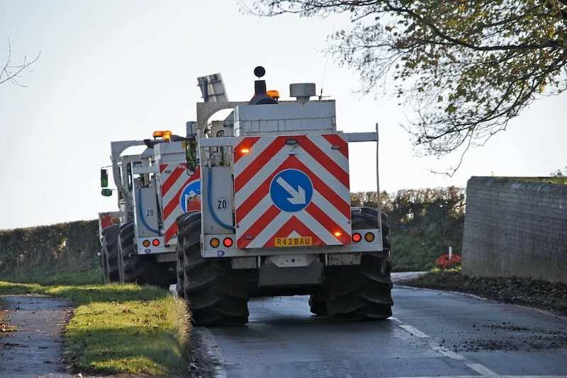
2D, 3D, 3D-3C, 4D and 4D-3C recording on Sercel 428, ARIES and nodal systems, with wholly owned fleets of vibrators and geophysical recording equipment.
Field processing centres travel with the crew, so noise, statics and coverage problems are found while the spread is still live and can still be fixed.
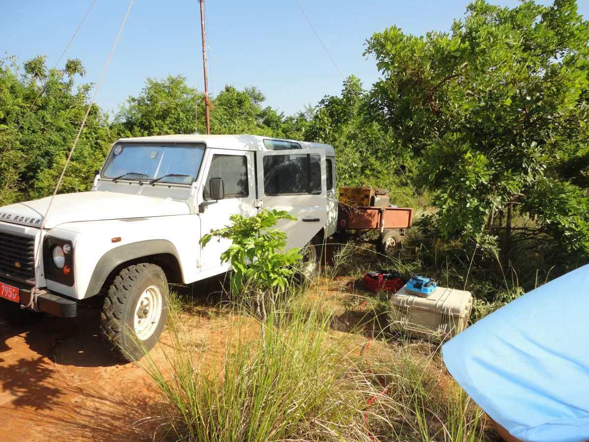
QC field processing and office-based processing on ProMAX, carrying the field data through statics, velocity analysis, noise attenuation and migration to an interpretable volume.
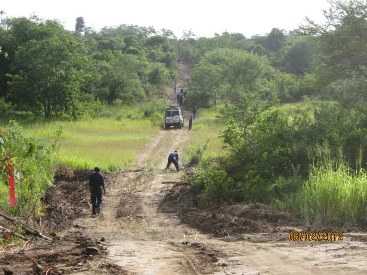
Near-surface velocity from upholes and low-velocity-layer refraction gives the static corrections that decide whether a deep reflector images sharply or smears.
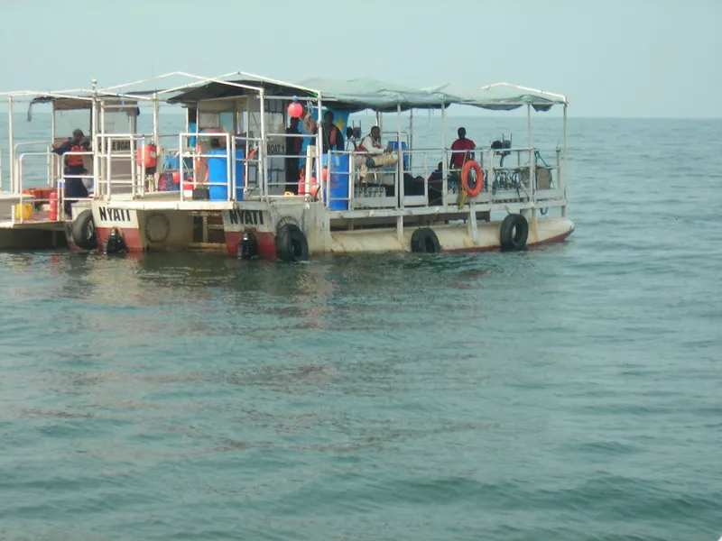
Real-time kinematic GPS positions every station, and shallow geophysical and shallow-water surveys extend the work to engineering, groundwater and transition-zone programmes.
Geometry
A source point sends energy into the ground; each receiver records what reflected off an interface and returned. The common midpoint between a source and a receiver is the place on the reflector that trace illuminates — and stacking many of them is what turns noise into an image.
Ray paths, reflector and the common-midpoint fan
Why it matters
The bandwidth a crew records sets the thinnest bed an interpreter will ever resolve. Move the dominant frequency below and watch two closely spaced reflectors merge into a single event.
Synthetic trace
A zero-phase Ricker wavelet at the dominant frequency you set, convolved with an illustrative impedance log and displayed as a variable-area wiggle — the convention on every land seismic section.
Home / Technology & fleet
Since 2011 AGS has acquired seismic vibrators, GPS survey units, drilling rigs and ProMAX data processing systems to support comprehensive field operations.
Densely sampled recording for large 3D spreads where cable telemetry remains the most economical route to channel count.
Distributed architecture suited to difficult access and long, thin 2D programmes across remote terrain.
Cable-free nodes for populated areas, farmland, dense forest and anywhere a cable spread would be a permitting or safety problem.
Controlled-source energy with repeatable sweeps — essential for 4D repeatability and for working close to infrastructure and communities.
In-house drilling for explosive source points and for the uphole programme that feeds the near-surface velocity model.
The same processing environment in the field camp and the office, so field QC products and the final sequence stay consistent.
Real-time kinematic positioning for station layout, topographic control and as-laid reconciliation.
What the equipment above is for: an imaged subsurface volume, here showing an anticline cut by a normal fault.
Support
Camps, line clearing, water, medical cover, vehicle maintenance and permit negotiation decide whether a production target is met as much as the recording system does.
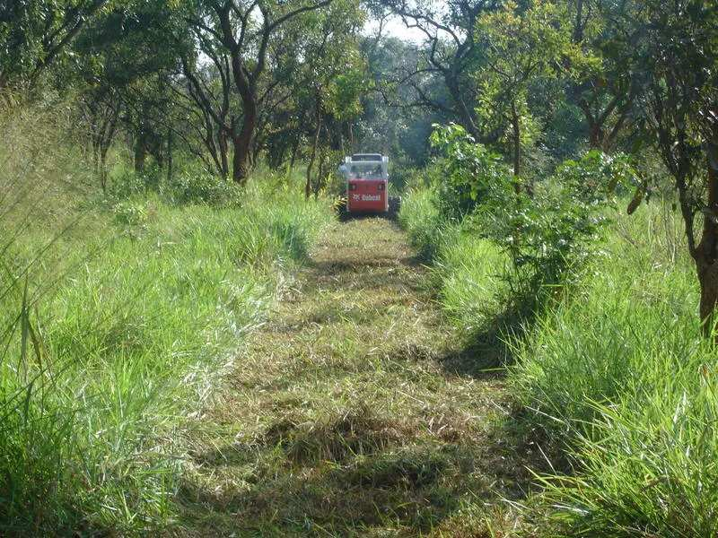
Cutting and reinstating access through bush, farmland and forest with the smallest footprint the geometry allows.
Shot hole and uphole drilling with in-house rigs, water supply and consumables managed by the same crew.
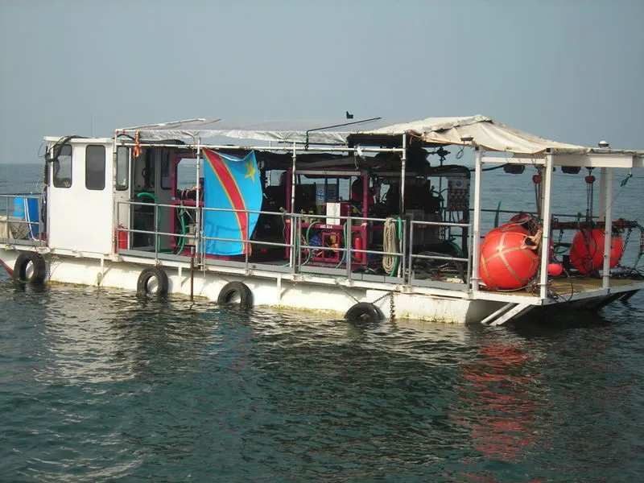
Recording barges, cable boats and shore crews for shallow water and transition-zone programmes.
Home / Operations
Dense forest, open desert, cultivated farmland, populated villages, mountain and shallow water — each one changes the spread, the source and the safety case.
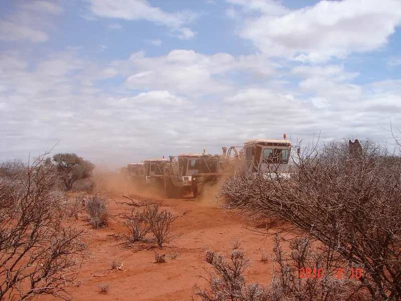
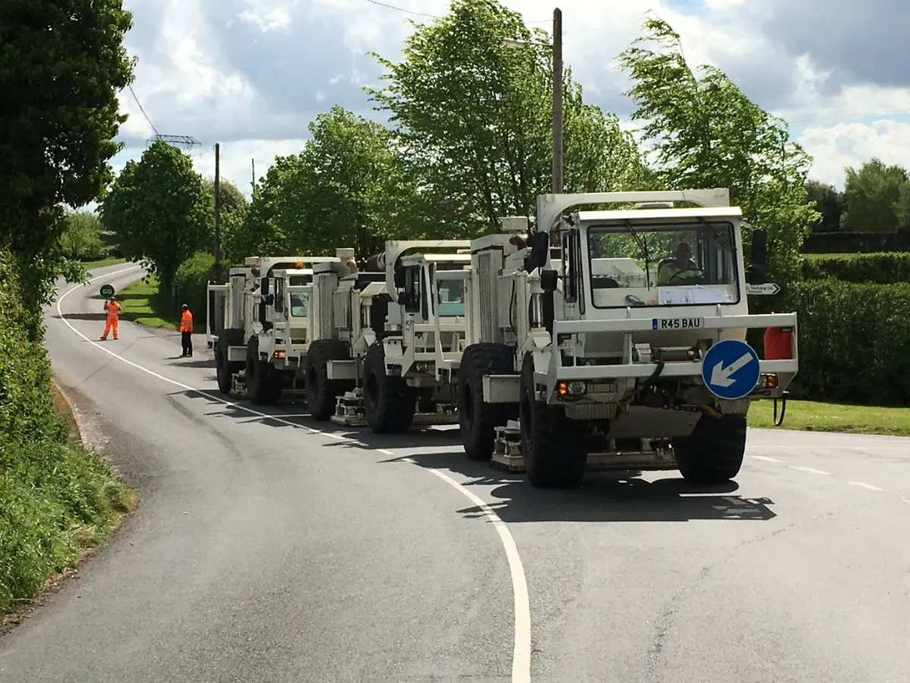
01 / 06
Vibroseis convoys move fast over open ground. The limit is dust, heat and the distance between the camp and the block — not the geophysics.
Terrain model
Dune field, forested ridge, cultivated flat, shoreline. The receiver spread, the source and the safety case all change with the surface — which is why AGS carries cabled, distributed and cable-free systems rather than one of them.
Survey line draped over a morphing terrain model
Gallery
Photographs from AGS crews in the field. Full-resolution originals and additional sets are held by the company and can be supplied on request.
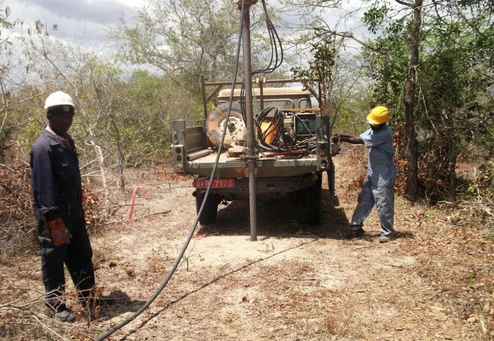
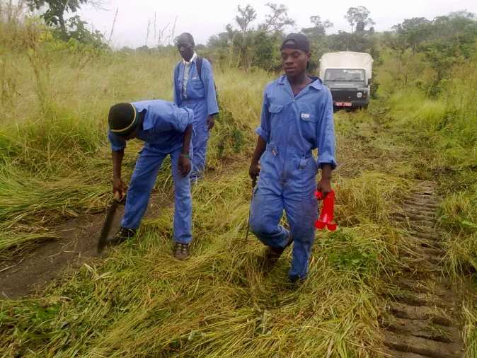
Home / QHSE
Zero injuries and zero environmental damage are the only acceptable targets, underpinned by ISO 9001:2015 certified quality management.
HSE culture
Our HSE culture rests on what supervisors do on the line, not on what the manual says.
Senior management commitment that crews can see, every day, on the spread.
Giving meaningful purpose to the work, so safe practice is owned by the crew rather than imposed on it.
Encouraging critical thinking — the authority to stop a job belongs to whoever sees the hazard first.
Focused on employee growth, including the recruitment and development of local talent in every operating country.
Zero is a target that has to be re-earned on every line, every day.
Underpinned by transparency, business ethics, proactive innovation, and reliable delivery to clients, partners and the communities hosting exploration activity.
Home / Careers
AGS prioritises recruiting and developing local talent in every country it operates — from line crew and drillers through to observers, surveyors and processors.
Working at AGS
Most of our senior field staff started on a line. We hire for attitude to safety and willingness to learn, then train people into surveying, observing, drilling supervision and processing as the work allows.
Laying, retrieving and maintaining cabled and nodal spreads. The route into every other field role.
Shot hole and uphole drilling with in-house rigs, including water supply and hole logging.
Station layout, topographic control and as-laid reconciliation using real-time kinematic GPS.
Running the recording system, monitoring noise and quality, and producing daily field QC products.
Statics, velocity analysis, noise attenuation and migration on ProMAX.
Safety, medical cover, camp logistics and community liaison.
Progression
There is no single route through a seismic crew. Layout leads to surveying, observing or drilling; the field leads to processing and to supervision. The network below is how people actually move.
Routes through a crew
Applications
We keep applications on file against upcoming mobilisations and contact people when a crew forms in their region.
Home / Projects & programmes
AGS has been acquiring and processing land seismic since 2011 across Oman, Tanzania, Egypt, Uganda, Kurdistan, Türkiye and the United Kingdom. Below is how a programme actually runs, and the operations we run it with.
Programme types
Every AGS programme is one of these three, or a combination of them run from the same camp. Regions are the countries in which AGS holds offices or operational bases.
Shot-hole drilling with in-house rigs, for terrain where a vibrator cannot go or where the near surface demands a buried source. Includes the uphole programme that feeds the statics model.
Wholly owned vibrator fleets running controlled, repeatable sweeps — the source of choice near infrastructure, in populated ground and on any programme where 4D repeatability matters.
Recording barges, cable boats and shore crews carrying the spread from the shoreline into water too shallow for a marine vessel — the transition zone neither a land nor a marine contractor covers well.
Anatomy of a programme
Fleet, recording systems, drilling rigs and camp move onto the block. Equipment AGS owns arrives on an AGS schedule.
Landowners, authorities and the communities hosting the work are consulted before a line is cut. Access routes and no-go areas are agreed and mapped.
RTK GPS positions every source and receiver station; access is cut to the minimum the geometry allows, and recorded for reinstatement.
Shot holes and upholes are drilled and logged. Low-velocity-layer refraction gives the statics that decide whether a deep reflector images sharply.
Cabled, distributed or nodal spreads go down; vibrator sweeps or shot points energise the ground. Production is measured in source points per day.
Field processing travels with the crew. Noise, statics and coverage problems surface while the spread is still live and can still be fixed.
Lines are reinstated, the camp is cleared, and the data goes through statics, velocity analysis, noise attenuation and migration on ProMAX to an interpretable volume.
Footage and stills from AGS crews. Phase 07 renders the migrated volume the programme exists to produce.
Media library
Clips and photographs from AGS operations. Full-resolution originals, and project-specific sets tied to named surveys, are held by the company and supplied on request.
Note for AGS: the phases above describe how an AGS programme runs, not one named survey. Client names, block names, dates, line kilometres and channel counts are deliberately absent — send the real project records and they drop straight into this timeline.
Your programme
Send the basin, the target depth and the access constraints, and we will come back with a geometry, a terrain plan and a production estimate you can hold us to.
Home / Contact
Enquiries
Send the basin, the target depth and the access constraints. A survey designer will come back with a geometry, a terrain plan and an honest view of what the ground will and will not give you.